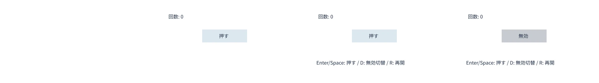
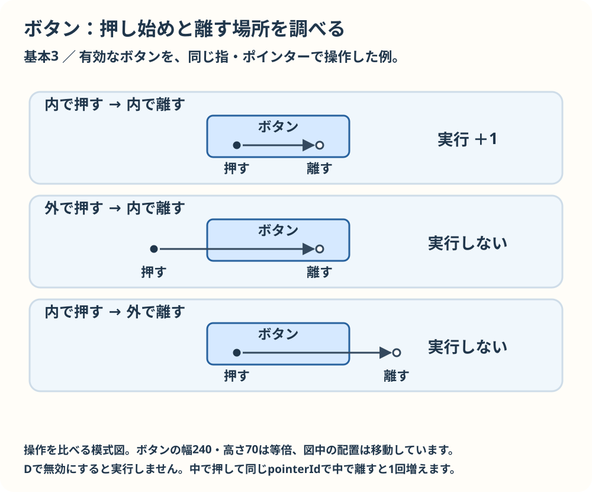

Canvasのボタンを作る
始める前に
ZIPを展開してできたフォルダーでindex.htmlを開きます。ZIPにはひな型の3ファイルが入っています。
WindowsでZIPを展開する（動画）
変更前を探し、変更後のコードに置き換えて保存し、index.html を開き直します。
ステップ 1：ボタンの四角を描く
このステップの見本を図で見る
右端=520、下端=230
まず押す場所の形を描く。
enabled ? "押す" : "無効"
四角の上に名前を重ねる。
ゲーム画面とコードの前後を見る

このステップの見本
この行を足す前 変わったコードの一例（script.js）
ctx.fillText(enabled ? "押す" : "無効", 370, 205);
見本で確かめること
「押す」と書いたボタンが表示されます。
目標
ボタンの四角を描く。
小さな作業
上から順に作業します。目印を探し、その下のコードを書きます。
タッチ操作の状態を用意する
作業用の script.js の先頭近くで、次の目印のすぐ下に追加します。
目印
const ctx = canvas.getContext("2d");追加するコード
canvas.style.touchAction = "none";
let enabled, hover, pressed, count;touchAction = "none" は Canvas 上のタッチによるブラウザーの操作を抑えます。let で、使用可能か、重なっているか、押した入力の ID、押した回数を覚えます。
ボタンを初期化する
start() から update() の閉じ波括弧までで、次の範囲を置き換えます。
置き換える範囲
function start() {
}
function update() {
}置き換えるコード
function start() {
enabled = true; hover = false; pressed = null; count = 0;
}
function update() {
}= は右の値を左へ入れる代入です。最初は有効、重なりなし、押した ID なし、回数 0 にします。true と false は真偽値、null は値がないことを表します。
状態に合わせた色を選ぶ
draw() の画面を消す行の下で、次の目印のすぐ下に追加します。
目印
ctx.clearRect(0, 0, canvas.width, canvas.height);追加するコード
ctx.fillStyle = !enabled ? "#c6cbd0" : pressed !== null ? "#d89c45" : hover ? "#f8dc8b" : "#dce8ef";条件 ? A : B は条件に応じて A または B を選びます。無効、押下中、重なり中、通常の順に色を選びます。! は真偽を反転し、!== は同じではないという比較です。
ボタンの四角を描く
色を選ぶ行の下で、次の目印のすぐ下に追加します。
目印
ctx.fillStyle = !enabled ? "#c6cbd0" : pressed !== null ? "#d89c45" : hover ? "#f8dc8b" : "#dce8ef";追加するコード
ctx.fillRect(280, 160, 240, 70);fillRect は左上を原点として横 280、縦 160、幅 240、高さ 70 の四角を描きます。
ボタンの文字を描く
四角を描く行の下で、次の目印のすぐ下に追加します。
目印
ctx.fillRect(280, 160, 240, 70);追加するコード
ctx.fillStyle = "#26334a"; ctx.font = "26px sans-serif";
ctx.fillText(enabled ? "押す" : "無効", 370, 205);色と文字の大きさを決め、有効なら「押す」、無効なら「無効」と表示します。
押した回数を表示する
ボタンの文字の行から gameLoop() の先頭行までで、次の範囲を置き換えます。
置き換える範囲
ctx.fillText(enabled ? "押す" : "無効", 370, 205);
}
function gameLoop() {置き換えるコード
ctx.fillText(enabled ? "押す" : "無効", 370, 205);
ctx.fillText("回数: " + count, 100, 100);
}
function gameLoop() {文字と回数は + でつなぎます。ボタンの入力は次のステップで追加します。
保存して作業用の index.html を再読み込みし、ボタンと「回数: 0」が表示されることを確かめます。入力の処理は次に作ります。
保存後の確認
保存してゲーム画面を更新する（動画）
index.html を再読み込みします。「押す」と書いたボタンが表示されます。 この段階の見本を開く
小さな練習
ボタンの色を変えます。 練習後はコードを元に戻してください。
ステップ 2：座標と押下を調べる
このステップの見本を図で見る
280≤519<520、160≤200<230
右端の手前はボタンの中。
520 < 520 は偽
右端ちょうどは外。
enabled かつ inside → pressedを記録
このステップでは回数はまだ増えない。
ゲーム画面とコードの前後を見る
このステップの見本
この行を足す前 変わったコードの一例（script.js）
const rect = canvas.getBoundingClientRect();
見本で確かめること
ボタンに乗せると色が変わり、押して離すと元に戻ります。
目標
座標と押下を調べる。
小さな作業
上から順に作業します。目印を探し、その下のコードを書きます。
入力位置をCanvasの座標へ変える
変数の宣言の下で、次の目印のすぐ下に追加します。
目印
let enabled, hover, pressed, count;追加するコード
function point(event) {
const rect = canvas.getBoundingClientRect();
return {x: (event.clientX - rect.left) * canvas.width / rect.width, y: (event.clientY - rect.top) * canvas.height / rect.height};
}表示上の左上からの距離を、Canvas の実際の幅や高さと表示上の幅や高さの比で換算します。幅 800 を 400 で表示するとき、左から 100 の位置は Canvas 内の x = 200 です。 クリック座標の図も確認できます。
ボタンの範囲を判定する
point() の後で、次の目印のすぐ下に追加します。
目印
function point(event) {
const rect = canvas.getBoundingClientRect();
return {x: (event.clientX - rect.left) * canvas.width / rect.width, y: (event.clientY - rect.top) * canvas.height / rect.height};
}追加するコード
function inside(p) { return p.x >= 280 && p.x < 520 && p.y >= 160 && p.y < 230; }横は 280 以上 520 未満、縦は 160 以上 230 未満です。&& はすべての条件が必要という意味です。>= は以上、< は未満を表します。
押し始めを記録する
draw() の閉じ波括弧から gameLoop() の先頭行までで、次の範囲を置き換えます。
置き換える範囲
}
function gameLoop() {置き換えるコード
}
function down(event, id) {
if (!enabled || pressed !== null || !inside(point(event))) return;
event.preventDefault(); pressed = id;
if (event.pointerId !== undefined && canvas.setPointerCapture) { try { canvas.setPointerCapture(event.pointerId); } catch (error) {} }
}
function gameLoop() {無効、別の入力で押下中、または範囲外なら return で終えます。|| はどれか一つが成り立つという意味です。範囲内なら入力 ID を記録し、可能ならポインターを捕捉します。捕捉に失敗しても処理を続けます。
重なりを記録する
down() の閉じ波括弧の下で、次の目印のすぐ下に追加します。
目印
if (event.pointerId !== undefined && canvas.setPointerCapture) { try { canvas.setPointerCapture(event.pointerId); } catch (error) {} }
}追加するコード
function move(event) { hover = inside(point(event)); }移動した位置がボタン内なら hover が真になり、描く色が変わります。
押した入力の解除を用意する
move() の下で、次の目印のすぐ下に追加します。
目印
function move(event) { hover = inside(point(event)); }追加するコード
function up(event, id) {
if (pressed === id) pressed = null;
}離した入力の ID が押し始めた ID と同じなら、押下中の記録を消します。=== は同じかを調べます。この段階ではまだ回数は増えません。
ポインター入力を受け取る
up() の先頭行から gameLoop() の先頭行までで、次の範囲を置き換えます。
置き換える範囲
function up(event, id) {
if (pressed === id) pressed = null;
}
function gameLoop() {置き換えるコード
function up(event, id) {
if (pressed === id) pressed = null;
}
if (window.PointerEvent) {
} else {
}
function gameLoop() {ポインター入力に対応しているかを確認し、対応する場合としない場合で受け付ける方法を分けます。
押した位置を受け取る
PointerEvent の分岐の中で、次の目印のすぐ下に追加します。
目印
if (window.PointerEvent) {追加するコード
canvas.addEventListener("pointerdown", event => down(event, event.pointerId));押したときに down() へ位置と入力 ID を渡します。
移動と枠外への移動を受け取る
pointerdown の行の下で、次の目印のすぐ下に追加します。
目印
canvas.addEventListener("pointerdown", event => down(event, event.pointerId));追加するコード
canvas.addEventListener("pointermove", move);
canvas.addEventListener("pointerleave", () => { hover = false; });動いたら位置を調べ、Canvas の外に出たら重なりを解除します。
離した入力と中断を受け取る
pointerleave の行の下で、次の目印のすぐ下に追加します。
目印
canvas.addEventListener("pointerleave", () => { hover = false; });追加するコード
window.addEventListener("pointerup", event => up(event, event.pointerId));
window.addEventListener("pointercancel", event => { if (pressed === event.pointerId) pressed = null; });離したら up() を呼びます。入力が中断されたときも、同じ ID なら押下中の記録を消します。
ポインター非対応時のマウス操作を受け取る
PointerEvent の else の中で、次の目印のすぐ下に追加します。
目印
} else {追加するコード
canvas.addEventListener("mousedown", event => down(event, "mouse"));
canvas.addEventListener("mousemove", move);
canvas.addEventListener("mouseleave", () => { hover = false; });
window.addEventListener("mouseup", event => up(event, "mouse"));対応していない場合はマウスの押下・移動・退出・解除を受け取ります。マウスの ID は mouse として扱います。
画面から離れたら入力を解除する
入力方式の分岐の閉じ波括弧の下で、次の目印のすぐ下に追加します。
目印
window.addEventListener("mouseup", event => up(event, "mouse"));
}追加するコード
window.addEventListener("blur", () => { pressed = null; hover = false; });別の画面へ移ったときに押下と重なりの記録を消します。
保存して再読み込みし、ボタンに重ねると色が変わり、押して離すと元の色に戻ることを確かめます。回数を増やす処理は次に作ります。
保存後の確認
ボタンに乗せると色が変わり、押して離すと元に戻ります。 この段階の見本を開く
小さな練習
ボタンの幅とinsideの範囲を一緒に変えます。 練習後はコードを元に戻してください。
ステップ 3：押したときの処理と無効状態
このステップの見本を図で見る
このステップの見本
この行を足す前 変わったコードの一例（script.js）
ctx.fillText("Enter/Space: 押す / D: 無効切替 / R: 再開", 90, 350);
見本で確かめること
内から内、外から内、内から外の操作を比べ、Dでも確認します。
目標
押したときの処理と無効状態。
小さな作業
上から順に作業します。目印を探し、その下のコードを書きます。
ボタンを実行する関数を作る
inside() の行の下で、次の目印のすぐ下に追加します。
目印
function inside(p) { return p.x >= 280 && p.x < 520 && p.y >= 160 && p.y < 230; }追加するコード
function activate() { if (enabled) count++; }有効なときに count++ で回数を 1 増やします。
離した位置でボタンを実行する
up() の中で、次の目印のすぐ下に追加します。
目印
function up(event, id) {追加するコード
if (pressed === id && inside(point(event))) activate();押した入力と同じ ID がボタン内で離されたときに実行します。範囲外で離したときは実行しません。
キー操作を案内する
回数を表示する行の下で、次の目印のすぐ下に追加します。
目印
ctx.fillText("回数: " + count, 100, 100);追加するコード
ctx.fillText("Enter/Space: 押す / D: 無効切替 / R: 再開", 90, 350);Enter と Space で実行、D で有効・無効を切り替え、R で初期化する操作を表示します。
キー入力を受け取る
blur の処理の下で、次の目印のすぐ下に追加します。
目印
window.addEventListener("blur", () => { pressed = null; hover = false; });追加するコード
window.addEventListener("keydown", event => {
if (event.repeat) return;
const key = event.key.toLowerCase();
if (key === "r") { start(); return; }
});keydown はキーを押したときに起きます。押し続けた繰り返しを除き、小文字にしたキーが R なら初期化します。
Dで有効と無効を切り替える
キー入力処理の R の判定の下で、次の目印のすぐ下に追加します。
目印
if (key === "r") { start(); return; }追加するコード
if (key === "d") { enabled = !enabled; pressed = null; }!enabled で真偽を反転し、押下中の記録も消します。
EnterとSpaceで実行する
D の判定の下で、次の目印のすぐ下に追加します。
目印
if (key === "d") { enabled = !enabled; pressed = null; }追加するコード
else if (key === "enter" || event.key === " ") { event.preventDefault(); activate(); }Enter または Space ならブラウザーの既定の動作を防ぎ、activate() を呼びます。無効のときは回数を増やしません。

ボタンの中で押し始め、同じ指で中で離すと実行します。外から押したまま入ったり、中から外へ離したりしても実行しません。無効にしたボタンは反応しません。
保存して再読み込みし、ボタン内で押して離すと回数が増え、外で離すと増えないことを確かめます。D で無効にし、Enter と Space でも増えないことを確かめます。
保存後の確認
内から内、外から内、内から外の操作を比べ、Dでも確認します。 この段階の見本を開く
小さな練習
押したときの回数ではなく別の処理を試します。 練習後はコードを元に戻してください。
自分のゲームに組み込むには
point、inside、down、move、up、activateとenabled・pressedを移します。
自分のボタンの範囲とactivateの中身を変更します。再挑戦時は押下を解除し、blurやcancelも処理します。
gameLoopを増やさず、既存のstart・update・drawから処理を呼びます。再挑戦では持ち込んだ位置や状態、時刻を初期化します。